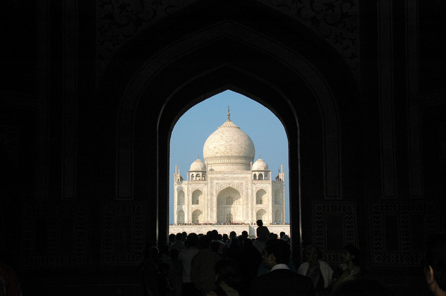
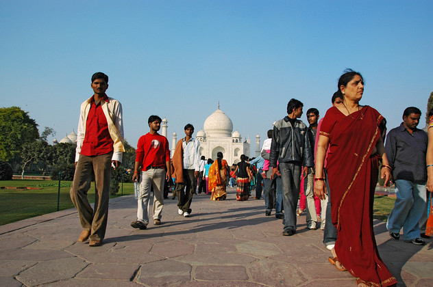
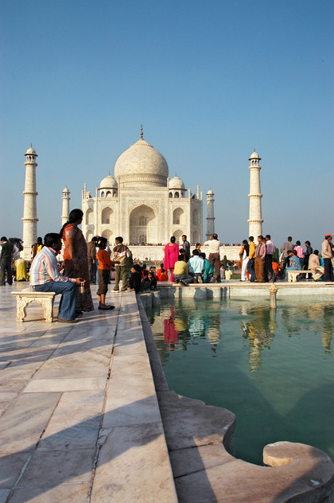
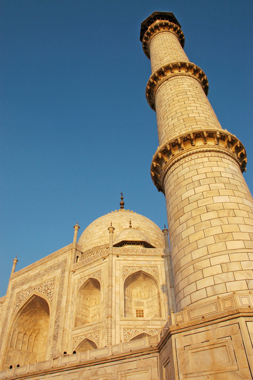
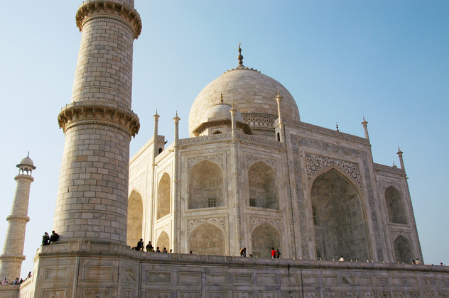
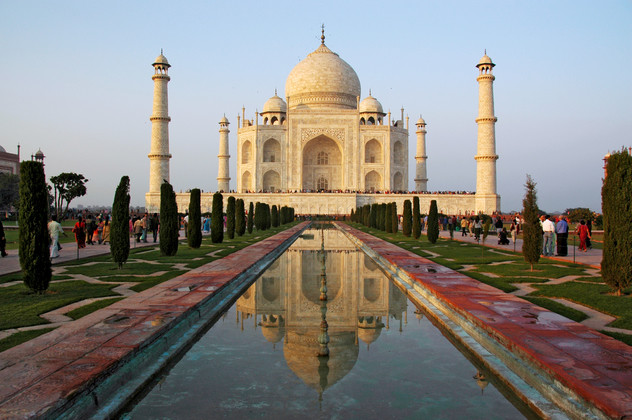
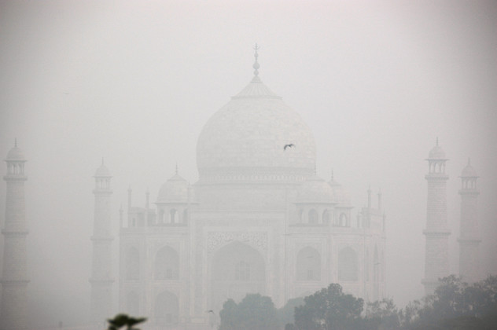

Um sechs Uhr hat uns ein wortkarger Inder vom Hotel abgeholt und durch noch verschlafene Gassen zum Bus geführt. Neben den unvermeidlichen Kühen, die durch die Gassen ziehen, liegen überall notdürftig zugedeckte Menschen. An vielen Ecken spendet ihnen brennender Müll Wärme. Die hätten wir auch gebrauchen können, denn der Bus hat sich noch eine Stunde Zeit gelassen. Aus den vier Stunden Fahrt sind auch fünf geworden. Aber letztendlich sind wir gut und relativ stressfrei in Agra angekommen.
Unsere Unterkunft, die Shanti Lodge, hat ein Rooftop-Restaurant mit einem fantastischen Blick auf den Taj Mahal. Wir wollten ihn natürlich von nahem sehen, wurden aber von einer Schlange abgeschreckt, die fast bis an unser Hotel reichte. Glücklicherweise ist unsere dreiste Drängelattacke den Argusaugen der trillerpfeifenden Ordner entgangen. So konnten wir nach kaum zehn Minuten mit zigtausenden, hübsch hergerichteten Indern in der Parkanlage lustwandeln. Der Anblick des marmornen Wunderwerks ist atemberaubend. Wir kamen aber nur langsam voran, weil sich dauernd wahnsinnige Inder ausgerechnet mit uns fotografieren lassen wollten.
      